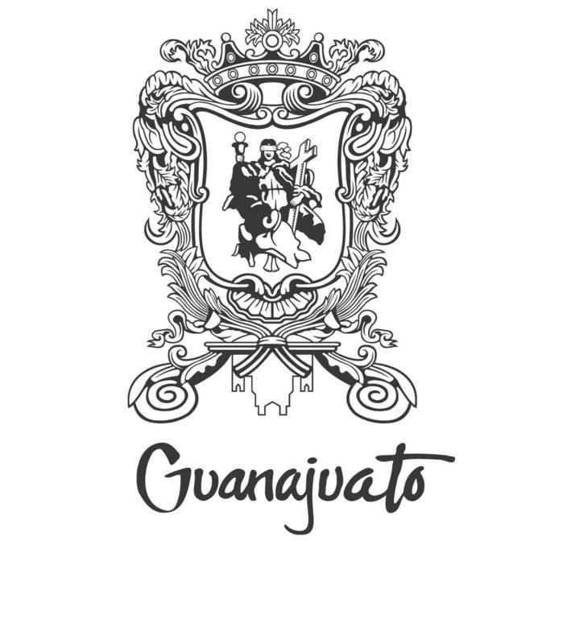

Irapuato |
San Miguel |
Guanajuato |
| Parque Irekua, uno de los espacios más verdes de la ciudad. |
Templo del Hospitalito, joya histórica de Irapuato. |
 |
Alhóndiga de Granaditas, símbolo de la Independencia. |
Teatro Juárez, un ícono cultural del estado. |
| Zoológico de Irapuato, ideal para la familia. |
Plaza Principal con su fuente de aguas danzarinas. |
Universidad de Guanajuato, referente educativo. |
Museo Iconográfico del Quijote. |
| Fuente de los Delfines, ubicada en el centro histórico. |
Estadio Sergio León Chávez, casa del fútbol local. |
Juan Pérez López |
 |
| Museo de la Ciudad, con piezas arqueológicas. |
Mercado Miguel Hidalgo, tradición gastronómica. |
Irapuato es reconocida como la capital mundial de las fresas. |
- Enchiladas mineras
- Cajeta
- Fresas con crema
- Chiles en nogada
- Tamales de ceniza
- Guacamayas
|